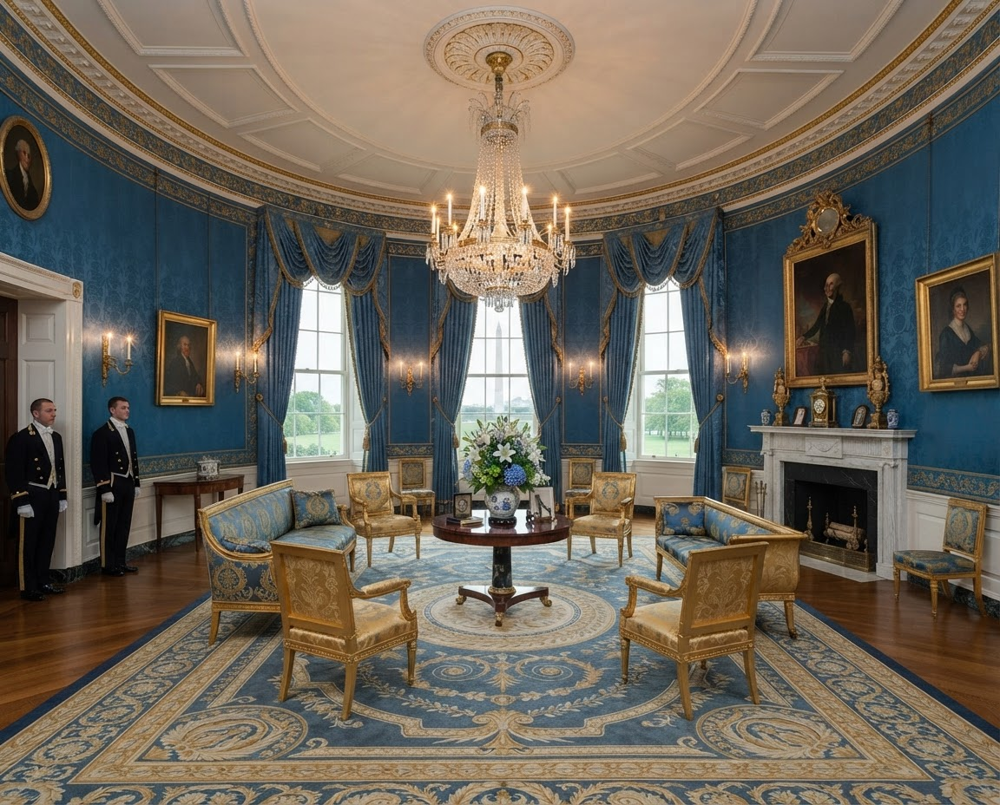
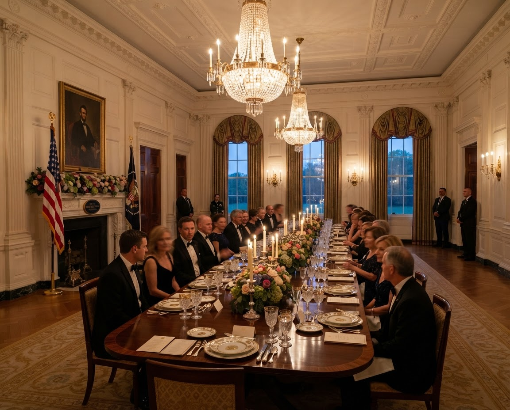
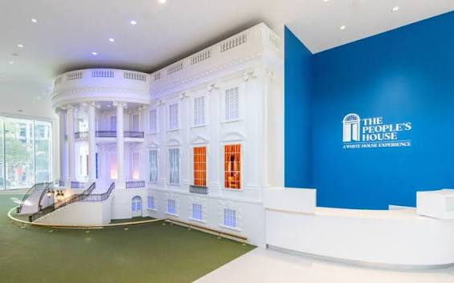
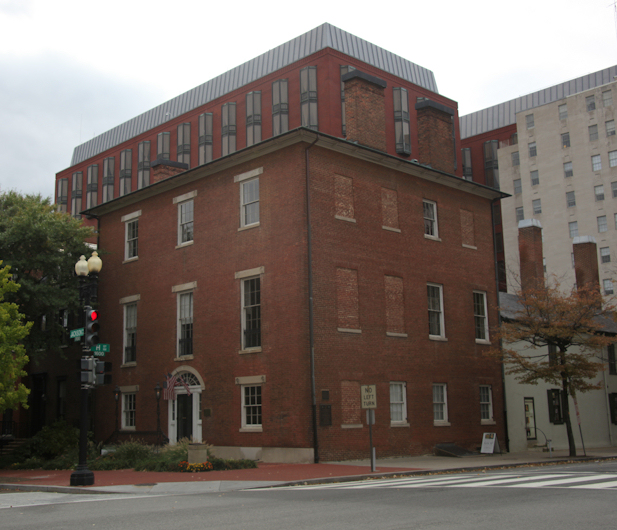

White House Tours
The hardest ticket in Washington, and the one with the longest lead time. Here is the real timeline, the information they require, and what happens on the day.
21 Days
Absolute minimum notice. Requests inside this window are not accepted by the Secret Service.
3 Months
This is when you should actually ask. Spring and summer months require this much time or more.
Free
No ticket is ever sold. Anyone who is trying to charge you is not the White House.
Tue-Sat
White House tours are only open Tuesday-Saturday. They are subject to cancellation with no notice.
The Request timeline, month by month
Working backwards from your trip date
-
1
3-6 MONTHS OUT
Submit Request
Through your Representative's or Senator's D.C. office. There is no public form issued by the White House.
-
2
WHEN REQUESTED
Send Guest Details
The United States Secret Service will conduct background screenings on all guests. The White House will send a form to collect each tour member's name, address and Social Security number. Passport numbers are acceptable for foreign nationals.
-
3
WEEKS OF SILENCE
Background Screening
This is the step that many people misread as rejection. The USSS will not update you on the status of your background check — you will only hear from them if they need additional information.
-
4
2 WEEKS TO 7 DAYS BEFORE
Confirmation Lands
Depending on request volume or other circumstances, your background screening will be complete between 2 weeks and 7 days before the requested tour.
What they need from every guest
Security Details
BRING
- Real ID or passport
- Phone, wallet, keys
- Confirmation email
- Comfortable Shoes
DON'T BRING
- Food, drinks, aerosols
- Bags of any size. There is no bag check.
- Video cameras, selfie sticks
What you will see
East Room
The largest room in the house, used for press conferences, bill signings, and state dinners' after-dinner entertainment.

Blue Room
The oval room at the center of the State Floor, where guests are formally greeted and the official Christmas tree stands each December.

State Dining Room
Seats up to 140 for state dinners, with Lincoln's portrait over the mantel and John Adams's prayer for the house beneath it.
If you can't get in

The People's House
A year-round museum experience dedicated to the story of the Executive Mansion, its inhabitants, and those who serve it. Passes are required for entry — reserve timed-entry passes in advance or try your luck with walk-up passes.
Reserve PassesWhite House Visitor Center
A free, no-request option with plenty of artifacts and one of the best gift shops in DC. It can get crowded, so early morning trips are best — a good stop even if you make it into the White House.
Get Directions
Decatur House
The first private residence in the White House neighborhood, built in 1818. Requires a reservation. Decatur House sits on President's Park, adjacent to the White House north entrance.
Reserve PassesWant to visit the Capitol too?
Same office, same scheduler. Requesting the Capitol at the same time costs nothing and doubles your odds of getting in somewhere.